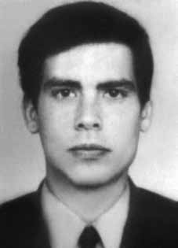

José
Carlos
Novaes
da Mata
Machado
BIOGRAFIA
Mais conhecido como “Zé”, foi dirigente da Ação Popular Marxista-Leninista (APML), inicialmente chamada apenas de Ação Popular (AP). Morreu aos 27 anos, em 1973, após sofrer torturas durante dez dias seguidos no DOI-Codi do Recife (PE). Na versão oficial de sua morte, consta que ele e o militante Gildo Macedo Lacerda teriam morrido num tiroteio na mesma cidade, após “um subversivo de codinome Antônio” ter pressentido algo de errado e aberto fogo contra eles num encontro para o qual teriam sido levados como isca.
Sua prisão foi facilitada por Gilberto Prata Soares, seu cunhado e ex-membro da AP, que, após ser preso em fevereiro de 1973, começou a operar como uma espécie de Cabo Anselmo civil, ao concordar em colaborar com os militares na identificação dos militantes da APML. Sua atuação como informante levou também à prisão de Honestino Guimarães.
Filho do jurista e ex-deputado Edgar da Mata Machado, que teve sua cadeira de cátedra cassada durante o regime, Zé entrou para o curso de Direito da Universidade Federal de Minas Gerais (UFMG), em 1964, tendo obtido a primeira colocação no vestibular. Em 1967, chegou a ser vice-presidente da União Nacional dos Estudantes (UNE). Em 1968, foi preso durante o Congresso de Ibiúna (SP) e condenado a oito meses de reclusão nas celas do Dops de Belo Horizonte. Em 1970, casou-se com sua companheira de AP, Maria Madalena Prata Soares, e morou, por mais de um ano, numa favela em Fortaleza (CE).
Sua morte e a de Gildo repercutiram internacionalmente. O nome de José Carlos Mata Machado foi dado a uma rua em Belo Horizonte. Anteriormente a rua chamava-se Dan Mitrione, torturador que veio dos Estados Unidos para o Brasil com o objetivo de ensinar “métodos modernos de interrogatório” aos policiais e militares, utilizava como cobaias mendigos recolhidos nas ruas e como alvo presos políticos.
Better known as “Zé”, he was leader of the Marxist-Leninist Popular Action (APML), initially called just Popular Action (AP). He died at the age of 27, in 1973, after suffering torture for ten consecutive days at DOI-Codi in Recife (PE). The official version of his death states that he and militant Gildo Macedo Lacerda died in a shootout in the same city, after “a subversive codenamed Antônio” sensed something wrong and opened fire on them in a meeting to which they were taken as bait.
His arrest was facilitated by Gilberto Prata Soares, his brother-in-law and former member of the AP, who, after being arrested in February 1973, began to operate as a kind of civilian Corporal Anselmo, by agreeing to collaborate with the military in identifying the APML militants. His role as an informant also led to the arrest of Honestino Guimarães.
Son of jurist and former deputy Edgar da Mata Machado, who had his chair revoked during the regime, Zé entered the Law course at the Federal University of Minas Gerais (UFMG) in 1964, having obtained first place in the entrance exam. In 1967, he became vice-president of the National Union of Students (UNE). In 1968, he was arrested during the Congress in Ibiúna (SP) and sentenced to eight months in the cells of the Dops in Belo Horizonte. In 1970, he married his AP companion, Maria Madalena Prata Soares, and lived, for more than a year, in a favela in Fortaleza (CE).
His death and that of Gildo had international repercussions. The name José Carlos Mata Machado was given to a street in Belo Horizonte. Previously, the street was called Dan Mitrione, a torturer who came to Brazil from the United States with the aim of teaching “modern interrogation methods” to police and military personnel, using beggars collected on the streets as guinea pigs and targeting political prisoners.
Más conocido como “Zé”, fue líder de Acción Popular marxista-leninista (APML), inicialmente denominada simplemente Acción Popular (AP). Murió a los 27 años, en 1973, después de sufrir torturas durante diez días consecutivos en el DOI-Codi, en Recife (PE). La versión oficial de su muerte afirma que él y el militante Gildo Macedo Lacerda murieron en un tiroteo en la misma ciudad, luego de que “un subversivo cuyo nombre clave era Antônio” presintió algo y abrió fuego contra ellos en una reunión en la que fueron llevados como cebo.
Su arresto fue facilitado por Gilberto Prata Soares, su cuñado y ex miembro de la AP, quien, después de ser arrestado en febrero de 1973, comenzó a operar como una especie de cabo civil Anselmo, al aceptar colaborar con los militares en la identificación de los militantes de la APML. Su papel como informante también provocó la detención de Honestino Guimarães.
Hijo del jurista y ex diputado Edgar da Mata Machado, a quien le revocaron la cátedra durante el régimen, Zé ingresó en la carrera de Derecho en la Universidad Federal de Minas Gerais (UFMG) en 1964, habiendo obtenido el primer lugar en el examen de ingreso. En 1967 asumió la vicepresidencia de la Unión Nacional de Estudiantes (UNE). En 1968, fue detenido durante el Congreso en Ibiúna (SP) y condenado a ocho meses en las celdas del Dops de Belo Horizonte. En 1970 se casó con su compañera de AP, María Madalena Prata Soares, y vivió, durante más de un año, en una favela de Fortaleza (CE).
Su muerte y la de Gildo tuvieron repercusión internacional. El nombre José Carlos Mata Machado se le dio a una calle de Belo Horizonte. Anteriormente, la calle se llamaba Dan Mitrione, un torturador que llegó a Brasil procedente de Estados Unidos con el objetivo de enseñar “métodos modernos de interrogatorio” a policías y militares, utilizando a mendigos recogidos en las calles como conejillos de indias y atacando a presos políticos.
CIRCUNSTÂNCIAS DA MORTE
José Carlos Novaes da Mata Machado foi morto por agentes do DOI-CODI/IV, em 28 de outubro de 1973, junto com o companheiro de militância na APML, Gildo Lacerda. Os dois tinham sido presos em dias e locais distintos – Mata Machado no dia 19 de outubro, em São Paulo, e Gildo no dia 22 de outubro, em Salvador – e transferidos para Recife, onde foram mortos sob tortura. Segundo a versão oficial veiculada em jornais da época, José Carlos da Mata Machado teria morrido junto com Gildo Macedo Lacerda em um tiroteio provocado por outro colega de militância, de codinome “Antônio”. A nota oficial relatava que os dois militantes da APML tinham sido presos e haviam confessado que teriam um encontro com esse colega na avenida Caxangá, em Recife, no dia 28 de outubro de 1973. Chegando ao ponto de encontro, teriam sido baleados pelo companheiro de organização, uma vez que “Antônio” teria percebido a presença dos policiais à paisana e disparado contra Gildo e José Carlos. Na sequência, esse terceiro militante teria conseguido fugir. Essa versão foi corroborada pelo relatório da Marinha enviado ao ministro da Justiça, Maurício Corrêa, em 1993, que informou que José Carlos teria morrido em um tiroteio no dia 28 de outubro de 1973, no qual teriam saído feridos dois agentes. A história buscou encobrir não só o assassinato de Gildo e de José Carlos, mas também o desaparecimento de Paulo Stuart Wright, que era o “Antônio” mencionado na história, codinome usado pelo militante que acabou se tornando mais um desaparecido político da ditadura militar. Essa tentativa de encobrir a morte dos militantes ficou conhecida como “Teatro de Caxangá”, em alusão ao caráter fantasioso do episódio. Desde março de 1973, José Carlos da Mata Machado vinha sendo seguido pelos órgãos da repressão, que coordenavam uma operação de cerco contra a APML. Nesse período, diversos integrantes da organização foram presos e muitos foram mortos pela repressão. Percebendo o risco iminente de ser capturado, José Carlos estava providenciando um refúgio, junto com a sua esposa, Madalena Prata, quando foi preso. Tinha combinado com dois cunhados de ir para uma fazenda em Minas Gerais, onde se encontraria com Madalena. No entanto, buscando providenciar ajuda jurídica para os companheiros presos, foi a São Paulo, no dia 19 de outubro de 1973, e acabou sendo preso na saída da cidade, junto com os dois cunhados e um amigo da família que tinham ido buscá-lo. Foi conduzido para o DOI-CODI de São Paulo e, posteriormente, transferido para o DOICODI de Recife. Os demais foram levados para o 12º Regimento de Infantaria, em Belo Horizonte, onde permaneceram algum tempo incomunicáveis. No dia 22 de outubro, Madalena e seu filho Eduardo foram presos no sítio onde esperavam José Carlos. Desconstruindo a versão oficial da morte, depoimentos de diversos ex-presos políticos afirmaram ter testemunhado a presença de José Carlos no DOI-CODI de Recife e ter ouvido sua sessão tortura e a de Gildo Lacerda, companheiro da APML preso no mesmo órgão. Rubens Manoel de Lemos, que estava preso no DOI-CODI/IV, denunciou a morte de Mata Machado sob tortura naquele órgão. Ele relatou que viu José Carlos da Mata Machado pouco antes de morrer, sangrando pela boca e ouvidos, ao lado de outro militante que parecia morto, e ouviu do jovem machucado: “Companheiro: Meu nome é Mata Machado. Sou dirigente nacional da AP (Ação Popular). Estou morrendo. Se puder, avise aos companheiros que eu não abri nada”. A morte dos dois militantes recebeu ampla repercussão, dentro e fora do país. O pai de José Carlos, Edgard de Godoi da Mata Machado, apresentou uma denúncia ao Conselho de Defesa dos Direitos da Pessoa Humana, que foi lida na Câmara e no Senado, no dia 7 de novembro, pelos líderes da oposição, Deputado Aldo Fagundes e Senador Nelson Carneiro. Foi instaurado, na época, um inquérito policial na Delegacia de Segurança Social de Pernambuco para apurar a morte dos militantes, mas acabou sendo arquivado em janeiro de 1974, por alegada ausência de elementos para o oferecimento de denúncia. Conforme registrado no relatório do inquérito, datado de 29 de novembro de 1973, os corpos dos dois militantes foram levados ao Instituto Médico-Legal (IML) pelos sargentos José Mário dos Santos e Francisco de Azevedo Barbosa. O delegado Jorge Tasso de Souza, que assinou o ofício encaminhando os corpos para o IML, declarou posteriormente que estranhou o fato de os corpos terem sido conduzidos por militares do Exército e o fato de não ter sido solicitada a presença de autoridades policiais. Não foi emitida, na época, nenhuma certidão de óbito explicando a causa das mortes, e os corpos não foram entregues às famílias, sendo enterrados como indigentes no Cemitério da Várzea, em caixão de madeira sem tampa. Apesar disso, a família de José Carlos da Mata Machado conseguiu recuperar seu corpo e trasladá-lo para Belo Horizonte algumas semanas após a morte, sob as condições impostas pelo coronel Antônio Cúrcio Neto, então chefe da 2ª Seção do IV Exército, de não haver publicidade ou sequer aviso fúnebre. A advogada Mércia de Albuquerque acompanhou a exumação realizada no dia 10 de novembro de 1973 e descreveu o estado em que estava o corpo de José Carlos, indicando as violências sofridas. No relato que fez à família de Mata Machado, Mércia declarou ter identificado diversas fraturas ósseas em seus membros e a sua cabeça “espatifada”. Quando foi descoberta a vala clandestina no cemitério de Dom Bosco, em Perus, a família de José Carlos decidiu fazer a exumação do seu corpo para confirmar a sua identidade. No ato, foi confirmado que os restos mortais pertenciam a José Carlos, enterrado no cemitério Parque da Colina, em Belo Horizonte. O reconhecimento foi feito pela irmã e a partir de exame da arcada dentária. Tempos depois da morte de José Carlos, no dia 17 de dezembro de 1992, seu cunhado Gilberto Prata Soares declarou à Comissão Parlamentar Externa sobre Mortos e Desaparecidos Políticos ter colaborado com o Centro de Informações do Exército (CIE), dando informações sobre os integrantes da Ação Popular. Por essa razão, desde março de 1973, José Carlos e Madalena vinham sendo rastreados, e diversas quedas de integrantes da AP foram provocadas, inclusive a de Gildo Macedo Lacerda.
José Carlos Novaes da Mata Machado was killed by DOI-CODI/IV agents, on October 28, 1973, along with his fellow member of the APML, Gildo Lacerda. The two had been arrested on different days and locations – Mata Machado on October 19th, in São Paulo, and Gildo on October 22nd, in Salvador – and transferred to Recife, where they were killed under torture. According to the official version published in newspapers at the time, José Carlos da Mata Machado died together with Gildo Macedo Lacerda in a shootout caused by another fellow activist, codenamed “Antônio”. The official note reported that the two APML activists had been arrested and had confessed that they would have a meeting with this colleague on Caxangá Avenue, in Recife, on October 28, 1973. Arriving at the meeting point, they were shot by their fellow organization member, as “Antônio” had noticed the presence of the plainclothes police officers and shot Gildo and José Carlos. Afterwards, this third militant would have managed to escape. This version was corroborated by the Navy report sent to the Minister of Justice, Maurício Corrêa, in 1993, which reported that José Carlos had died in a shootout on October 28, 1973, in which two agents were injured. The story sought to cover up not only the murder of Gildo and José Carlos, but also the disappearance of Paulo Stuart Wright, who was the “Antônio” mentioned in the story, the codename used by the militant who ended up becoming yet another missing politician from the military dictatorship. This attempt to cover up the death of the militants became known as “Caxangá Theater”, in allusion to the fantasy nature of the episode. Since March 1973, José Carlos da Mata Machado had been followed by repression bodies, who were coordinating a siege operation against the APML. During this period, several members of the organization were arrested and many were killed by repression. Realizing the imminent risk of being captured, José Carlos was providing refuge, together with his wife, Madalena Prata, when he was arrested. He had agreed with two brothers-in-law to go to a farm in Minas Gerais, where he would meet Madalena. However, seeking to provide legal help for his imprisoned companions, he went to São Paulo, on October 19, 1973, and ended up being arrested on the way out of the city, along with his two brothers-in-law and a family friend who had gone to pick him up. It was taken to DOI-CODI in São Paulo and, later, transferred to DOICODI in Recife. The rest were taken to the 12th Infantry Regiment, in Belo Horizonte, where they remained incommunicado for some time. On October 22, Madalena and her son Eduardo were arrested at the farm where they were waiting for José Carlos. Deconstructing the official version of the death, testimonies from several former political prisoners stated that they had witnessed the presence of José Carlos at the DOI-CODI in Recife and had heard his torture session and that of Gildo Lacerda, a fellow APML member imprisoned in the same institution. Rubens Manoel de Lemos, who was imprisoned at DOI-CODI/IV, denounced the death of Mata Machado under torture in that institution. He reported that he saw José Carlos da Mata Machado shortly before he died, bleeding from the mouth and ears, next to another militant who appeared dead, and heard from the injured young man: "Comrade: My name is Mata Machado. I am the national leader of AP (Popular Action). I am dying. If you can, tell your companions that I have not opened anything." The death of the two militants received wide repercussions, inside and outside the country. José Carlos's father, Edgard de Godoi da Mata Machado, presented a complaint to the Human Rights Defense Council, which was read in the Chamber and Senate, on November 7, by opposition leaders, Deputy Aldo Fagundes and Senator Nelson Carneiro. At the time, a police investigation was opened at the Pernambuco Social Security Police Station to investigate the deaths of the militants, but it ended up being archived in January 1974, due to an alleged lack of information to file a complaint. As recorded in the investigation report, dated November 29, 1973, the bodies of the two militants were taken to the Instituto Médico-Legal (IML) by sergeants José Mário dos Santos and Francisco de Azevedo Barbosa. Delegate Jorge Tasso de Souza, who signed the letter forwarding the bodies to the IML, later stated that he was surprised by the fact that the bodies were taken by Army soldiers and the fact that the presence of police authorities was not requested. At the time, no death certificate explaining the cause of death was issued, and the bodies were not handed over to their families, being buried as paupers in the Várzea Cemetery, in a wooden coffin without a lid. Despite this, José Carlos da Mata Machado's family managed to recover his body and move it to Belo Horizonte a few weeks after his death, under the conditions imposed by Colonel Antônio Cúrcio Neto, then head of the 2nd Section of the IV Army, that there would be no publicity or even a funeral notice. Lawyer Mércia de Albuquerque followed the exhumation carried out on November 10, 1973 and described the state of José Carlos' body, indicating the violence suffered. In the report she gave to Mata Machado's family, Mércia stated that she had identified several bone fractures in her limbs and her “shattered” head. When the clandestine grave was discovered in the Dom Bosco cemetery, in Perus, José Carlos' family decided to exhume his body to confirm his identity. At the time, it was confirmed that the remains belonged to José Carlos, buried in the Parque da Colina cemetery, in Belo Horizonte. The recognition was made by the sister and based on an examination of the dental arch. Some time after José Carlos' death, on December 17, 1992, his brother-in-law Gilberto Prata Soares declared to the External Parliamentary Commission on Political Deaths and Missing Persons that he had collaborated with the Army Information Center (CIE), providing information about the members of Ação Popular. For this reason, since March 1973, José Carlos and Madalena had been tracked, and several AP members were killed, including that of Gildo Macedo Lacerda.
José Carlos Novaes da Mata Machado fue asesinado por agentes del DOI-CODI/IV, el 28 de octubre de 1973, junto con su compañero de la APML, Gildo Lacerda. Los dos habían sido arrestados en días y lugares diferentes – Mata Machado el 19 de octubre, en São Paulo, y Gildo el 22 de octubre, en Salvador – y trasladados a Recife, donde fueron asesinados bajo tortura. Según la versión oficial publicada en los periódicos de la época, José Carlos da Mata Machado murió junto con Gildo Macedo Lacerda en un tiroteo provocado por otro compañero activista, cuyo nombre en código era “Antônio”. La nota oficial informaba que los dos militantes de la APML habían sido detenidos y habían confesado que se reunirían con este colega en la avenida Caxangá, en Recife, el 28 de octubre de 1973. Al llegar al punto de encuentro, fueron baleados por su compañero de organización, ya que “Antônio” había notado la presencia de los policías vestidos de civil y disparó contra Gildo y José Carlos. Posteriormente, este tercer militante habría logrado escapar. Esta versión fue corroborada por el informe de la Marina enviado al Ministro de Justicia, Maurício Corrêa, en 1993, que informaba que José Carlos había muerto en un tiroteo el 28 de octubre de 1973, en el que dos agentes resultaron heridos. La historia buscaba encubrir no sólo el asesinato de Gildo y José Carlos, sino también la desaparición de Paulo Stuart Wright, quien era el “Antônio” mencionado en la historia, nombre en clave utilizado por el militante que terminó convirtiéndose en un político más desaparecido de la dictadura militar. Este intento de encubrir la muerte de los militantes pasó a ser conocido como “Teatro Caxangá”, en alusión al carácter fantasioso del episodio. Desde marzo de 1973, José Carlos da Mata Machado era seguido por órganos de represión, que coordinaban una operación de asedio contra la APML. Durante este período, varios miembros de la organización fueron arrestados y muchos asesinados por la represión. Al darse cuenta del inminente riesgo de ser capturado, José Carlos se encontraba refugiándose, junto con su esposa, Madalena Prata, cuando fue arrestado. Había acordado con dos cuñados ir a una hacienda de Minas Gerais, donde conocería a Madalena. Sin embargo, buscando brindar ayuda jurídica a sus compañeros encarcelados, se dirigió a São Paulo, el 19 de octubre de 1973, y acabó siendo detenido a la salida de la ciudad, junto con sus dos cuñados y un amigo de la familia que había ido a recogerlo. Fue llevado al DOI-CODI de São Paulo y, posteriormente, trasladado al DOICODI de Recife. Los demás fueron llevados al Regimiento 12 de Infantería, en Belo Horizonte, donde permanecieron incomunicados por algún tiempo. El 22 de octubre Madalena y su hijo Eduardo fueron detenidos en la finca donde esperaban a José Carlos. Deconstruyendo la versión oficial de la muerte, los testimonios de varios ex presos políticos afirmaron haber presenciado la presencia de José Carlos en el DOI-CODI de Recife y haber escuchado su sesión de tortura y la de Gildo Lacerda, compañero de la APML encarcelado en la misma institución. Rubens Manoel de Lemos, quien se encontraba recluido en el DOI-CODI/IV, denunció la muerte de Mata Machado bajo tortura en esa institución. Refirió que vio a José Carlos da Mata Machado poco antes de morir, sangrando por la boca y los oídos, junto a otro militante que parecía muerto, y escuchó del joven herido: "Compañero: Mi nombre es Mata Machado. Soy el líder nacional de AP (Acción Popular). Me estoy muriendo. Si puede, dígale a sus compañeros que no he abierto nada". La muerte de los dos militantes tuvo amplia repercusión, dentro y fuera del país. El padre de José Carlos, Edgard de Godoi da Mata Machado, presentó una denuncia ante el Consejo de Defensa de los Derechos Humanos, que fue leída en la Cámara y en el Senado, el 7 de noviembre, por los dirigentes opositores, el diputado Aldo Fagundes y el senador Nelson Carneiro. En su momento, se abrió una investigación policial en la Comisaría de la Seguridad Social de Pernambuco para investigar la muerte de los militantes, pero terminó archivada en enero de 1974, por supuesta falta de información para presentar una denuncia. Según consta en el informe de la investigación, de 29 de noviembre de 1973, los cuerpos de los dos militantes fueron trasladados al Instituto Médico-Legal (IML) por los sargentos José Mário dos Santos y Francisco de Azevedo Barbosa. El delegado Jorge Tasso de Souza, quien firmó la carta de envío de los cadáveres al IML, afirmó posteriormente que le sorprendió que los cadáveres fueran llevados por soldados del Ejército y que no se solicitara la presencia de autoridades policiales. En ese momento no se emitió ningún certificado de defunción explicando la causa de la muerte, y los cuerpos no fueron entregados a sus familiares, siendo enterrados como indigentes en el Cementerio de Várzea, en un ataúd de madera sin tapa. Pese a ello, la familia de José Carlos da Mata Machado logró recuperar su cuerpo y trasladarlo a Belo Horizonte pocas semanas después de su muerte, bajo las condiciones impuestas por el coronel Antônio Cúrcio Neto, entonces jefe de la 2.ª Sección del IV Ejército, de que no habría publicidad ni siquiera aviso fúnebre. La abogada Mércia de Albuquerque siguió la exhumación realizada el 10 de noviembre de 1973 y describió el estado del cuerpo de José Carlos, indicando la violencia sufrida. En el informe que entregó a la familia de Mata Machado, Mércia afirmó que había identificado varias fracturas óseas en sus extremidades y su cabeza “destrozada”. Cuando fue descubierta la fosa clandestina en el cementerio Dom Bosco, en Perus, la familia de José Carlos decidió exhumar su cuerpo para confirmar su identidad. En su momento se confirmó que los restos pertenecían a José Carlos, enterrado en el cementerio Parque da Colina, en Belo Horizonte. El reconocimiento lo realizó la hermana y se basó en un examen de la arcada dental. Tiempo después de la muerte de José Carlos, el 17 de diciembre de 1992, su cuñado Gilberto Prata Soares declaró ante la Comisión Parlamentaria Externa sobre Muertes Políticas y Desaparecidos que había colaborado con el Centro de Información del Ejército (CIE), brindando información sobre los miembros de Ação Popular. Por esta razón, desde marzo de 1973 José Carlos y Madalena fueron rastreados y varios miembros de AP fueron asesinados, incluido el de Gildo Macedo Lacerda.